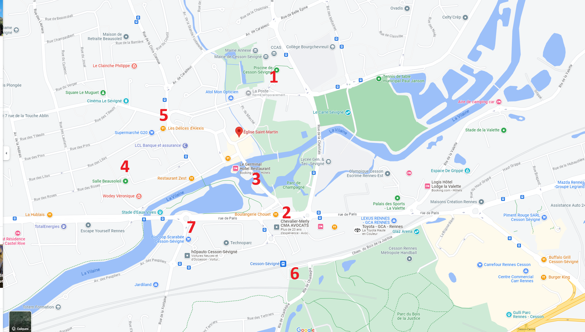

Accueil
Programme
Confirmation de venue
Logements
Liste de mariage
Covoiturages
Parkings

Voici les solutions de parking aux alentours de l'eglise de Cesson Sévigné. Il y a également de nombreuses places dans les rues autour de l'eglise. Mais elles risquent d'être pris d'assaut à cause du marché qui se déroule le samedi matin.
1 - Parking de la piscine.
2 - Parking près de la boulangerie.
3 - Parking sur les petites îles.
4 - Parking de la salle beausoleil.
5 - Parking du G20.
6 - Parking de la gare.
7 - Parking du Biocoop.